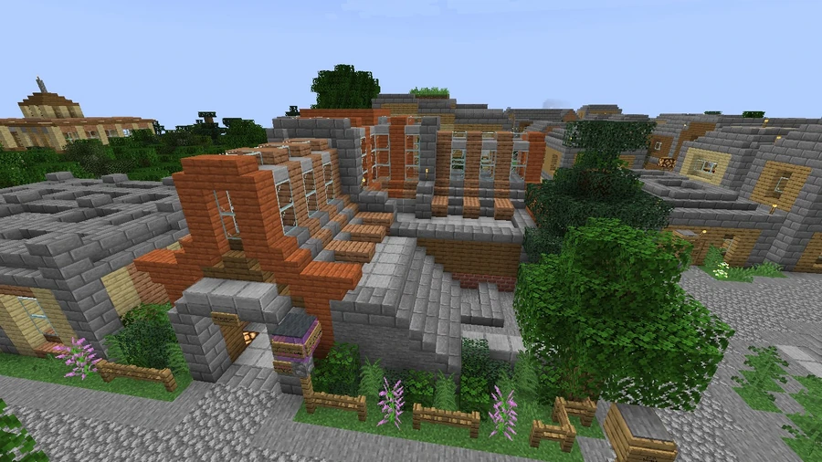
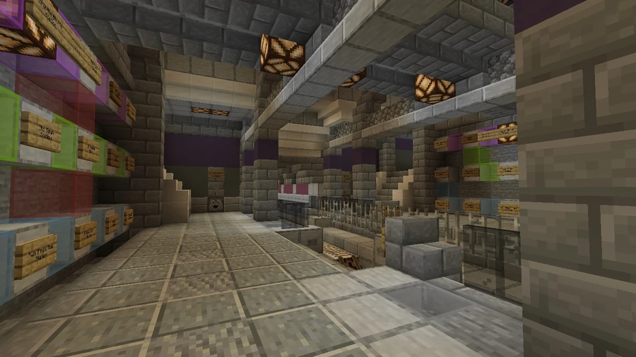

Broville Bluff Station
A name used in transport references for a modernized station in Broville Heights, within Old Town. The v11.1 history records signs being corrected from Broville Bluffs to Old Town Station.
Location and names
The community description places Broville Bluff Station in the suburb of Broville Heights, within Old Town District, and identifies it as a metro Purple Line station. In that description, it results from the transformation of the former Broville Heights station.
The v11.1 history, however, records signs being corrected from Broville Bluffs to Old Town Station. The names Bluff and Bluffs need to be read with this signage change in mind, without assuming an additional independent station.



Modernization
The structure is described as entirely modernized and decorated in its line's colors. Comparison with earlier images still allows the outlines of the old building to be recognized, despite changes to the station's finish and presentation.



See also
Sources and references
- v11.4.4 maps, signs, books and items World records
- Broville Bluff Station · Broville Wiki Community archive
Text adapted and expanded from Broville Bluff Station (contributors and history, revision 4904). Adapted text is available under CC BY-SA 3.0.